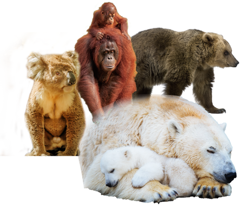
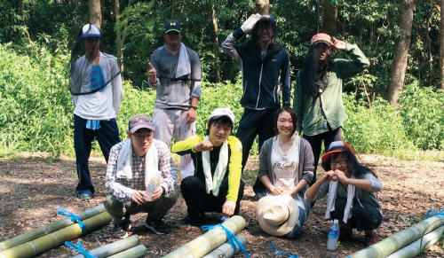
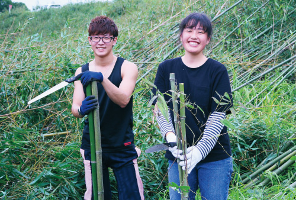

地球はかつてシミュレーションされた
悪いシナリオへ向かっている！？
止まらない温暖化が
地球にもたらしている影響とは？
そして、世界中から響く動物たちからの
S.O.Sとは？
地球規模の環境問題、
温暖化という側面から生物多様性を考えよう！
タイムスケジュール
| 14：20 | 中継開始 | |
| 14：30 | 開会のご挨拶 | |
| 14：40 | 第１部SPECIAL STAGE止まらぬ温暖化といきものたちのS.O.S |
 |
|
異常な猛暑、増え続ける大型台風、ゲリラ豪雨。いよいよ実感を伴うまでに深刻化してきた温暖化は、生物多様性にも破滅的な影響を及ぼしている…？地球環境を大きく変えてしまいかねない温暖化の及ぼす生態系への脅威に迫ります。 |
||
| 15：10 | 第２部知多半島ナウReport |
 |
|
深刻化する温暖化は、知多半島にどんな影響を及ぼしているのか？そして、その変化に立ち向かうために何ができるのか？知多半島での実態と取組に迫ります。 |
||
| 16：10 | 第３部知多半島ミライAction |
 |
|
知多半島で環境活動に取り組む若者団体から大人世代に向けて、自分たちの取組発表や未来へ向けた提言などを行います。 |
||
| 16：50 | 中継終了 | |
主催：大同大学地域環境調査研究センター
共催：知多半島生態系ネットワーク協議会
協力：NPO法人日本エコロジスト支援協会/命をつなぐPROJECT学生実行委員会
制作協力：レッドキューブ株式会社
-推奨環境-
※きれいな映像で見るには光回線やWifiなどの高速通信環境が必要です。
※視聴に要する通信料はお客様ご負担となります。映像の視聴は通信量が大きいため、
通信料が高額になる可能性がありますので、定額制の通信プランをご契約の上、ご視聴ください。
※当日の回線状況や予期せぬ機材トラブルにより生中継が満足に放送できない場合もございますのでご了承ください
※きれいな映像で見るには光回線やWifiなどの高速通信環境が必要です。
※視聴に要する通信料はお客様ご負担となります。映像の視聴は通信量が大きいため、
通信料が高額になる可能性がありますので、定額制の通信プランをご契約の上、ご視聴ください。
※当日の回線状況や予期せぬ機材トラブルにより生中継が満足に放送できない場合もございますのでご了承ください